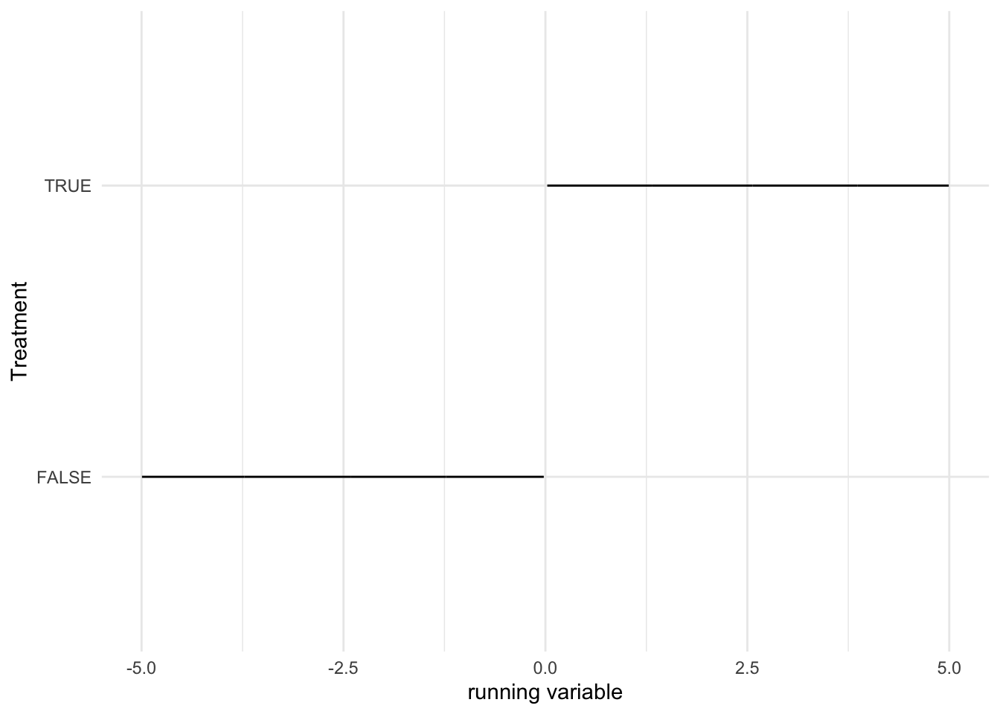
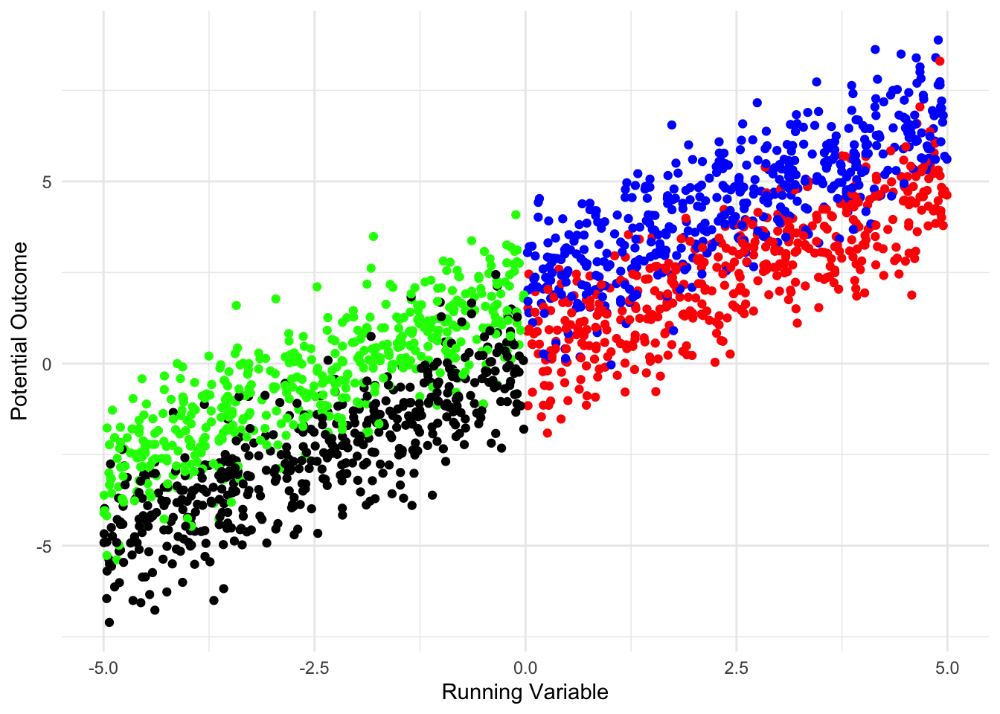
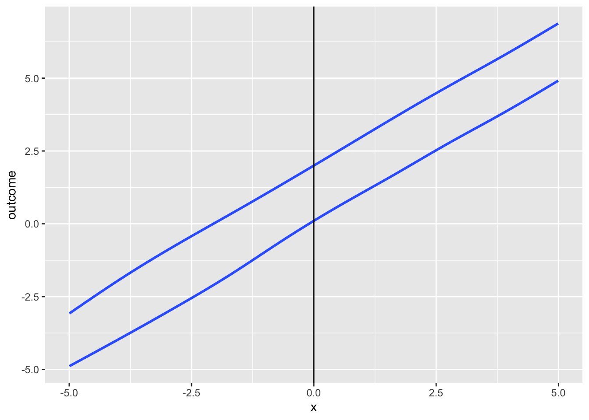
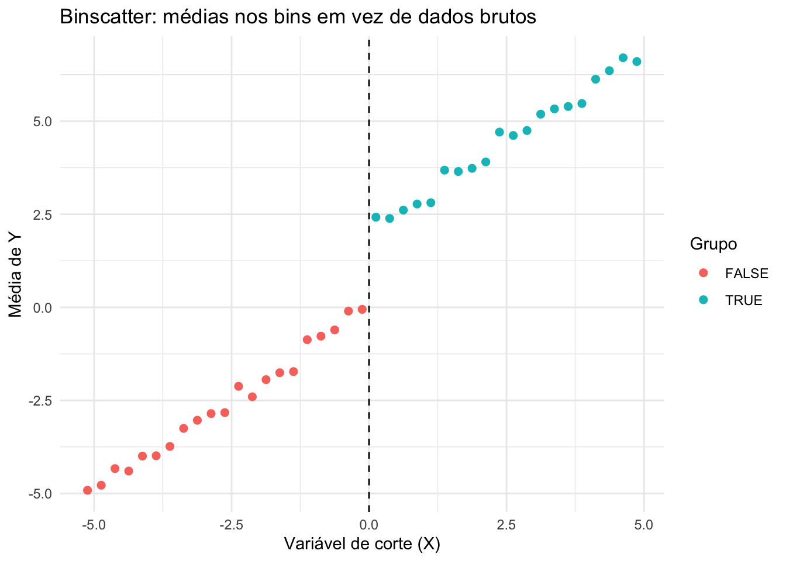
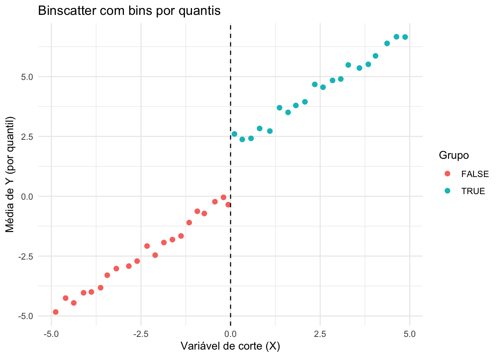
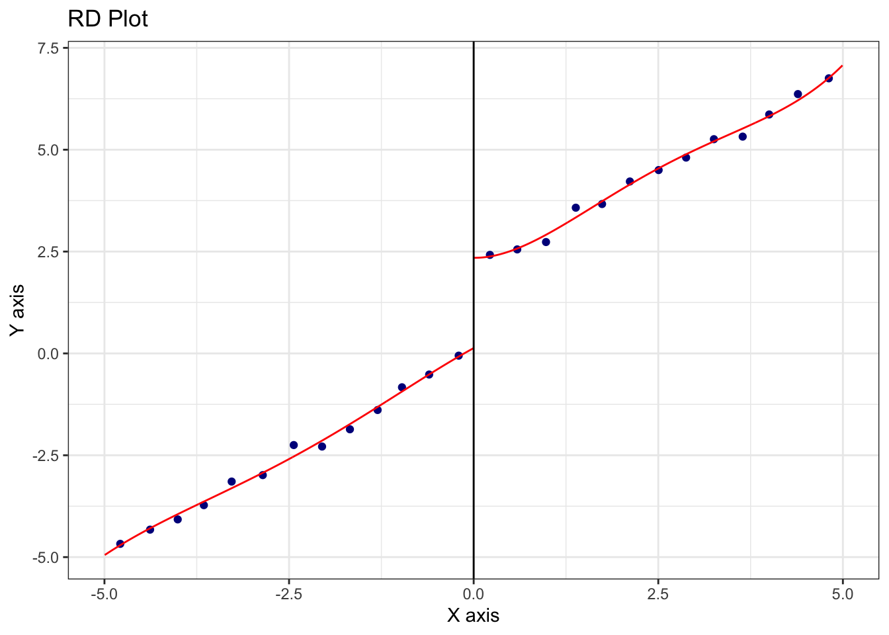
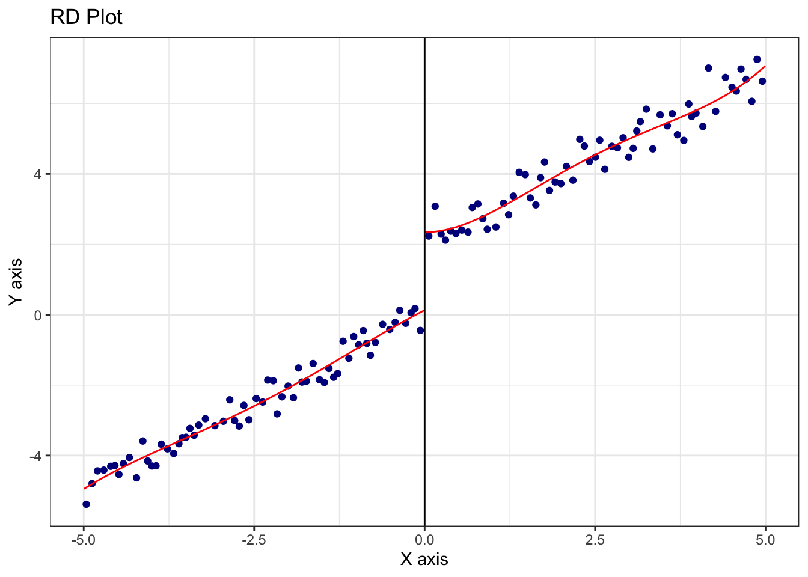

Capítulo 7 Desenho de Regresão Discontínua
7.1 Outline da aula
Na aula de hoje, iremos aprender sobre identificação causal do do aspecto mais simples da RD e como funciona
Em seguida, estimação. Se tivermos tempo, extensões.
7.2 Características-chave da RDD
A Regressão Discontínua (RDD) é caracterizada por uma variável contínua \(X_i\), que determina quem recebe tratamento, denotado por \(T_i\) (1 se tratado). Por convenção, \(X\) é chamada de “running variable”, “assignment variable” ou “forcing variable”.
7.3 Fuzzy RDD
Pode acontecer do ponto de corte não determinar quem recebe ou não o tratamento, mas apenas a probabilidade de receber o tratamento.
Nesse caso, a regra serve como variável instrumental ao redor do ponto de corte.
Tudo se passa como se houvesse always-takers e/ou never-takers ao redor do ponto de limiar.
Ex.: regra de voto determina número de cadeiras. Mas migração partidária altera o número. Então quem fica abaixo do número mínimo em um distrito pode ter cadeiras naquele distrito via migração partidária. São always-takers.
7.3.1 Observação e Corte
É essencial observar \(X\) e conhecer o ponto de corte ou limiar \(c\).
Uma das suposições da RDD é que ela requer a continuidade da variável \(X\) para identificação, embora, na prática, alguns estudos de RDD tenham usado running variables discretas. A continuidade de \(X\) é necessária porque a identificação ocorre no limite.
7.3.2 Estimativa dos Efeitos do Tratamento
A comparação de \(\lim_{x \uparrow c} E[Y_i | X_i = x]\) com \(\lim_{x \downarrow c} E[Y_i | X_i = x]\) fornece uma estimativa dos efeitos do tratamento (note a direção das setas).
Esta comparação é equivalente a: \(\lim_{x \to c} E[Y_i | X_i = x, T_i=0]\) e \(\lim_{x \leftarrow c} E[Y_i | X_i = x, T_i=1]\), uma vez que, neste exemplo, à direita de \(c\) todos recebem tratamento; à esquerda, ninguém recebe. Portanto:
- \(\lim_{x \to c} E[Y_i | X_i = x] \approx E[Y_{0i} | X_i = c]\)
- \(\lim_{x \leftarrow c} E[Y_i | X_i = x] \approx E[Y_{1i} | X_i = c]\)
Se fôssemos usar regressão linear, o modelo seria: \(y_i = \alpha + \beta_1 (x_i > c) + \beta_2 x_i + \beta_3 x (x_i > c) + e_i\), em que \(c\) é o ponto de corte, e \(x\) é a running variable.
7.4 Suposição de continuidade
- A suposição de continuidade é tão crítica que vale discutirmos um pouco mais sobre ela.
- Se há continuidade, isso significa que, na auência do ponto de corte \(c\), x (e outras covariáveis) não devem apresentar descontinuidade.
- Ex.: Suponha que estamos interessados em estudar o efeito da incumbência sobre a chance de reeleição futura ou riqueza futura desses políticos.
- Habilidades e carisma são variáveis que devem influenciar tanto a chance de serem incumbentes como os resultados de interesse. Em um RDD, podemos usar close elections para estimar o efeito. E a suposição de continuidade requer que carisma e habilidades não tenham descontinuidade no cut off de 50%. Na verdade, apenas o resultado eleitoral é descontínuo no cut off, que vai de não-eleito para eleito.
7.5 Suposições na RDD
7.5.1 Suposição de Não-manipulação com Precisão
A identificação dos efeitos do tratamento na RDD baseia-se na premissa de que \(X\) atua como um aleatorizador ao redor de \(c\). Imagine que \(X\) seja uma variável aleatória uniforme usada para atribuir tratamento. Se \(X \geq c\), uma unidade recebe tratamento. Na RDD, \(X\) tem o mesmo papel, exceto que não assumimos que \(X\) é independente do resultado \(Y\). Na maioria das aplicações, \(X\) e \(Y\) são correlacionados de alguma forma.
7.5.2 Problemas de Manipulação
No entanto, se \(c\) não for arbitrário ou tiver uma relação determinística com \(Y\), ou se as unidades puderem — com precisão — determinar seus escores \(X\) e, assim, escolher receber tratamento ou não, então \(X\) ao redor de \(c\) não se comporta mais como um aleatorizador — há alguma forma de auto-seleção que poderia depender de variáveis não observáveis.
7.6 Testabilidade da Suposição de não-Manipulação
Em parte, isso é testável. As unidades não pareceriam semelhantes perto de \(c\) e haveria um “acúmulo” próximo a \(c\). No entanto, não podemos descartar a manipulação com precisão apenas com dados — devemos argumentar isso com conhecimento do assunto (é uma restrição de exclusão).
7.7 Estimação em RDD
7.7.1 Problema de Complete Overlapping
Um problema chave na estimação em RDD estrita é a completa falta de sobreposição.
Em matching, dicustimos como a ausência de sobreposição gerava problemas de extrapolação.
Sobreposição requer que \(0 < P(D_i = 1 | X_i) < 1\) para o domínio de \(X_i\). No domínio da running vairable \(X_i\), isso claramente não é satisfeito. Em RDD estrita, temos \(P(D_i = 1 | X_i < c) = 0\) e \(P(D_i = 1 | X_i \geq c) = 1\).
7.7.2 Dependência de Extrapolação
Devido à falta de sobreposição, dependemos de extrapolação para estimar os efeitos do tratamento. Dito de outra forma, podemos não ser capazes de estimar corretamente os efeitos do tratamento se errarmos a forma funcional \(Y_i = f(X_i)\). Novamente, essa foi uma motivação para usar matching.
O problema é que nunca sabemos se acertamos, então a especificação do modelo é uma questão chave na estimação RDD.
7.8 Métodos de Estimação
O problema sugere a necessidade de um método de estimação não paramétrico. Utilizaremos métodos paramétricos, não paramétricos (ou semiparamétricos) para tentar abordar essas questões.
7.9 Trade-off de Viés-Variância
- Mais perto de c: Melhor em termos de precisão, mas pode haver uma amostra insuficiente. Resulta em menos viés, mas mais variância.
- Mais distante de c: Dependemos menos de extrapolação, mas introduzimos mais viés, mesmo com menor variância.
7.9.1 Métodos de Largura de Banda Ótima
A ideia é restringir a estimativa a uma janela ao redor de \(X_i = c\), que pode ter tamanhos diferentes à esquerda ou à direita. Estes métodos buscam equilibrar a precisão das estimativas minimizando viés e variância conforme a proximidade do ponto de corte \(c\).
7.10 Regras arbitrárias
Atribuição de “coisas” a partir de regras com pontos de cortes
Bolsa família: a partir de certa renda
Educação: aprovação no ensino superior a partir de certa nota de corte
Espacial: polítia pública para donos de áreas abaixo ou acima de certas áreas.
Data: regras para aposentadoria, idade para entrar na escola, data para perdão de dívida: Desenrola: “…cujas dívidas tenham sido incluídas no cadastro de inadimplentes no período entre 1º de janeiro de 2019 e 31 de dezembro de 2022”.
Política: regras de número de vereadores, regras de população para ter segundo turno, regras para ter biometria etc.
7.11 Simulação
## Basic RD Model
set.seed(123)
N <- 1000 # number of observations
X <- runif (N , -5,5)
Y0 <- rnorm ( n =N , mean =X , sd=1) # control potential outcome
Y1 <- rnorm ( n =N , mean = X+2, sd=1) # treatment potential outcome
#You only get treatment if X>0
Treatment <- ( X >= 0)
# What we observe
Y = Y1* Treatment + Y0*(1- Treatment )
7.14 Simulação - Potential Outcomes Y1 e Y0

## `geom_smooth()` using method = 'gam' and formula = 'y ~ s(x, bs = "cs")'
7.15 Simulação - Y observado


Como escolher os bins? 1. Espaçamentos iguais ou quantis? 2. Quantos bins?
No exemplo, escolhi espaçamento igual e 20 bins. Podemos usar quantis. 
Não faz muita diferença neste exemplo, mas usar quantis é mais transparente e mais crível retoricamente, pois não mascara a densidade.
Sobre o número de bins, Cattaneo et. al (2020) discute o tema e sugere duas abordagens: 1. IMSE-minimizing (proporcional a \(n^{1/3}\)) 2. Mimmicking-variance (proporcional a \(n/log(n)^2\))
E usamos o pacote rdplot para implementar isso automaticamente

